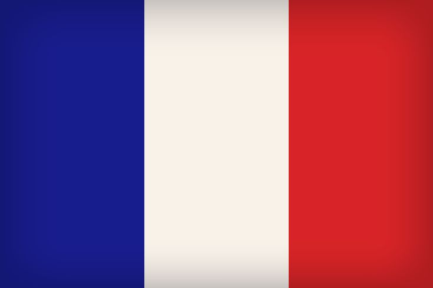
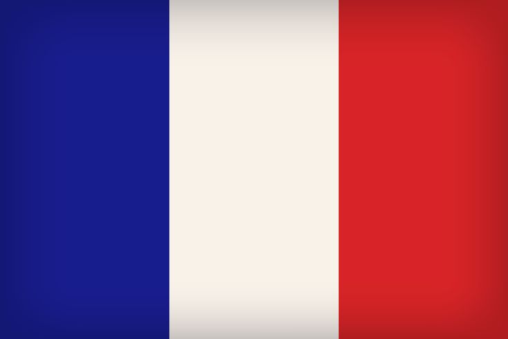

WORLD WAR II
Franklin D. Roosvelt

Fue el 32º presidente de los Estados Unidos y el único en ser elegido para cuatro mandatos, sirviendo desde 1933 hasta su muerte en 1945. Roosevelt es una figura central en la historia estadounidense, conocido por liderar al país durante dos de las mayores crisis del siglo XX: la Gran Depresión y la Segunda Guerra Mundial.
Wiston Churchill

Fue un estadista británico, oficial militar y escritor, conocido principalmente por su liderazgo durante la Segunda Guerra Mundial como Primer Ministro del Reino Unido. Churchill desempeñó un papel crucial en la resistencia de Gran Bretaña contra la Alemania nazi y es ampliamente reconocido por su oratoria inspiradora y su capacidad para movilizar al país en tiempos de crisis.
Joseph Stalin

Fue un líder político y revolucionario soviético que gobernó la Unión Soviética desde mediados de la década de 1920 hasta su muerte en 1953. Nacido como Iósif Vissariónovich Dzhugashvili en Gori, Georgia, Stalin es una figura controvertida y fundamental en la historia del siglo XX, conocido por su papel en la consolidación del régimen comunista en la Unión Soviética y por su liderazgo durante la Segunda Guerra Mundial.
Charles De Gaulle
 

Charles de Gaulle (1890-1970) fue un destacado militar y estadista francés, conocido por su liderazgo durante la Segunda Guerra Mundial y por ser el fundador de la Quinta República Francesa, de la cual fue presidente desde 1959 hasta 1969. Su influencia en la historia de Francia y su papel en la política internacional lo convierten en una figura clave del siglo XX.
Adolf Hitler
Adolf Hitler (1889-1945) fue un político alemán y líder del Partido Nazi (Nationalsozialistische Deutsche Arbeiterpartei, NSDAP) que gobernó Alemania desde 1933 hasta su muerte en 1945. Hitler es una de las figuras más infames de la historia debido a su papel en el desencadenamiento de la Segunda Guerra Mundial y la perpetración del Holocausto, en el que seis millones de judíos, así como millones de otros grupos considerados "indeseables" por el régimen nazi, fueron asesinados.
Benito Mussolini

Benito Mussolini (1883-1945) fue un político y dictador italiano, fundador del fascismo y líder de Italia desde 1922 hasta 1943. Mussolini es conocido por su papel en la instauración de un régimen totalitario en Italia y su alianza con la Alemania nazi durante la Segunda Guerra Mundial.
Hideki Tojo
Hideki Tojo (1884-1948) fue un militar y político japonés que desempeñó un papel crucial en la política y la conducción militar de Japón durante la Segunda Guerra Mundial. Como Primer Ministro de Japón desde 1941 hasta 1944, Tojo fue una figura clave en la planificación y ejecución de las acciones bélicas del país, incluyendo el ataque a Pearl Harbor.